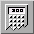
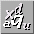
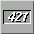
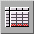
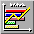

<!-- Documentation XQuad (c)1995-2000 AXENE contact axene@axene.org>
<html>

<head>
<title>Interface générale</title>
</head>

<body BGCOLOR="#FFFFFF" BACKGROUND="Images/back.gif" TEXT="#000000">

<p ALIGN="right"> </p>

<p><br>
<br>
L'interface principale est la fenêtre la plus importante dans laquelle se font toutes les
opérations sur les feuilles de calculs. <br>
<br>
</p>

<hr>

<p align="center"><br>
 <br>
<small><i>Photo d'écran&nbsp;: Interface générale. </i></small></p>

<p><br>
</p>

<hr>

<p><br>
</p>

<p><b><font SIZE="4">L'interface principale est composée de haut en bas et de gauche à
droite&nbsp;par: </font></b>

<ol>
  <li><a NAME="menu_bar">La <b>barre de menu déroulant</b>, qui comporte les menus
    déroulants suivants&nbsp;: </a><ul>
      <li><a HREF="Menu_File.html">Menu <i>&quot;Fichier&quot;</i></a>. </li>
      <li><a HREF="Menu_Edit.html">Menu <i>&quot;Edition&quot;</i></a>. </li>
      <li><a HREF="Menu_Selection.html">Menu <i>&quot;Sélection&quot;</i></a>. </li>
      <li><a HREF="Menu_View.html">Menu <i>&quot;Affichage&quot;</i></a>. </li>
      <li><a HREF="Menu_Format.html">Menu <i>&quot;Format&quot;</i></a>. </li>
      <li><a HREF="Menu_Graph.html">Menu <i>&quot;Grapheur&quot;</i></a>. </li>
      <li><a HREF="Menu_Window.html">Menu <i>&quot;Fenêtres&quot;</i></a>. </li>
      <li><a HREF="Menu_Help.html">Menu <i>&quot;Aide&quot;</i></a>. <br>
        &nbsp; </li>
    </ul>
  </li>
  <li><a NAME="horizontal_icon_bar">La <b>barre horizontale d'icônes</b>, qui donne accès à
    des boutons icônes permettant d'effectuer de nombreuses opérations sur le document
    actif. Le contenu de cette barre est défini en fonction du bouton icône enfoncé de la
    barre verticale d'icônes. </a><br>
    &nbsp; </li>
  <li><a NAME="edit_bar">La </a><a HREF="Edit_Bar.html"><b>barre d'édition</b></a>, qui
    permet de saisir le contenu de la cellule active (valeur, formule, texte...) <br>
    &nbsp; </li>
  <li><a NAME="vertical_icon_bar">La <b>barre verticale d'icônes</b> contient deux séries de
    boutons icônes. La première série des boutons qui permettent de faire varier la barre
    horizontale d'icônes. La deuxième est composée uniquement de l'icône
    &quot;Poubelle&quot;. Voici la description de ces boutons icônes&nbsp;: </a><br>
    &nbsp; <ul>
      <li> <a NAME="misc_vbar">le premier
        bouton icône modifie la barre horizontale d'icônes en </a><a HREF="HBar_Misc.html">barre
        horizontale d'icônes 'manipulations générales'</a>.<br>
        &nbsp;&nbsp; </li>
      <li> <a NAME="font_vbar">le deuxième
        bouton icône</a> <a NAME="misc_vbar">modifie</a><a NAME="font_vbar"> la barre horizontale
        d'icônes en </a><a HREF="HBar_Font.html">barre horizontale d'icônes 'manipulation des
        polices'</a>. <br>
        &nbsp; </li>
      <li> <a NAME="text_vbar">le troisième
        bouton icône </a><a NAME="misc_vbar">modifie</a><a NAME="text_vbar"> la barre horizontale
        d'icônes en </a><a HREF="HBar_Text.html">barre horizontale d'icônes 'manipulation des
        textes'</a>. <br>
        &nbsp; </li>
      <li> <a NAME="ornament_vbar">le
        quatrième bouton icône </a><a NAME="misc_vbar">modifie</a><a NAME="ornament_vbar"> la
        barre horizontale d'icônes en </a><a HREF="HBar_Ornament.html">barre horizontale
        d'icônes 'décoration des cellules'</a>. <br>
        &nbsp; </li>
      <li> <a NAME="graphic_vbar">le
        cinquième bouton icône </a><a NAME="misc_vbar">modifie</a><a NAME="graphic_vbar"> la
        barre horizontale d'icônes en </a><a HREF="HBar_Graphics.html">barre horizontale
        d'icônes 'manipulation des graphiques'</a>. <br>
        &nbsp; </li>
      <li><a NAME="zoom_vbar"> le sixième
        bouton icône </a><a NAME="misc_vbar">modifie</a><a NAME="zoom_vbar"> la barre horizontale
        d'icônes en </a><a HREF="HBar_Zoom.html">barre horizontale d'icônes 'Zoom'</a>. <br>
        &nbsp; </li>
      <li><a NAME="trash_vbar"> le dernier
        bouton icône est la poubelle. Elle s'utilise en lâchant une sélection de cadre du
        document actif.<br>
        &nbsp;&nbsp; </li>
    </ul>
  </li>
  <li></a><a NAME="worktop">Le <b>plan de travail</b> contient les </a><a
    HREF="Document_Window.html">documents</a> ouverts. Ils peuvent revêtir trois
    formes&nbsp;: <br>
    &nbsp; <ul>
      <li><a NAME="document_window">Une fenêtre normale qui peut être détruite, déplacée et
        redimensionnée dans le plan de travail. </a><br>
        &nbsp; </li>
      <li><a NAME="document_icon">Un icône qui peut être déplacé dans le plan de travail. Un
        double click sur un icône de document passe le document sous sa forme normale. </a><br>
        &nbsp; </li>
      <li><a NAME="document_maximized">Une fenêtre maximale qui remplit tout l'espace du plan de
        travail. Un click sur le petit bouton icône en haut à droite permet de passer le
        document sous sa forme normale. Lorsque l'on ouvre le premier document dans XQuad,
        celui-ci est par défaut en fenêtre maximale. </a><br>
        &nbsp; </li>
    </ul>
  </li>
  <li><a NAME="hint_line">La <b>barre d'information</b> permet d'avoir une aide concise sur
    les boutons icônes des barres d'XQuad et affiche en permanence le mode d'action actuel.
    Lorsque l'on déplace le curseur souris au-dessus d'un bouton icône, sa fonction
    principale apparaît dans la barre d'information. Celle-ci peut être cachée et affichée
    à partir du </a><a HREF="Menu_View.html#hint_line_menu_entry">menu <i>&quot;Affichage&quot;</i></a>
    (elle est affichée par défaut). </li>
</ol>

<p><br>
</p>

<hr>

<p ALIGN="right"></p>
</body>
</html>
